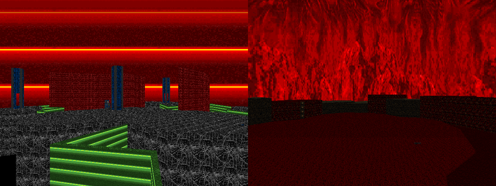

DOWNLOAD LINKS


| Year | 2024 |
| IWAD | Doom II |
| Source port | Boom/UMAPINFO-compatible |
| Game mode(s) | Single-player, coop |
| Map(s) contributed | Vol. 1: MAP18 & MAP20 |
The 30th entry in the ongoing Pineapple Under the Sea speedmapping series, PUSS 30 (or XXX) is a
double megawad comprising an impressive 120+ 1-hour speedmaps across two different "volumes". Sprinkled in among
the regular PUSS contributors is a fair number of fresh faces - and while I did contribute a map into PUSS20, I
very much consider myself part of the latter demographic.
Either way, my two contributions into PUSS30 occupy the MAP18 and MAP20 slots of Volume 1. MAP18,
"uhhhhhhhhhhhhhhhhhh" (titled as such because I was wholly unable to think of a name at all), is a pacifist map
with light platforming, arch-viles and a maze made out of explosive barrels. It's one of the most experimental
creations of my Doom mapping career, and I hope that shows.
MAP20, on other other hand, is comparatively traditional - a quasi-slaughter setpiece map titled "Operation
Oh-My-Lord". (Yes, the title is a reference to Operation Overlord.) It features a single fight involving a
rocket launcher, revenants and a few arachnotrons on a beach of Hell whereto you drift with the stream of
blood.